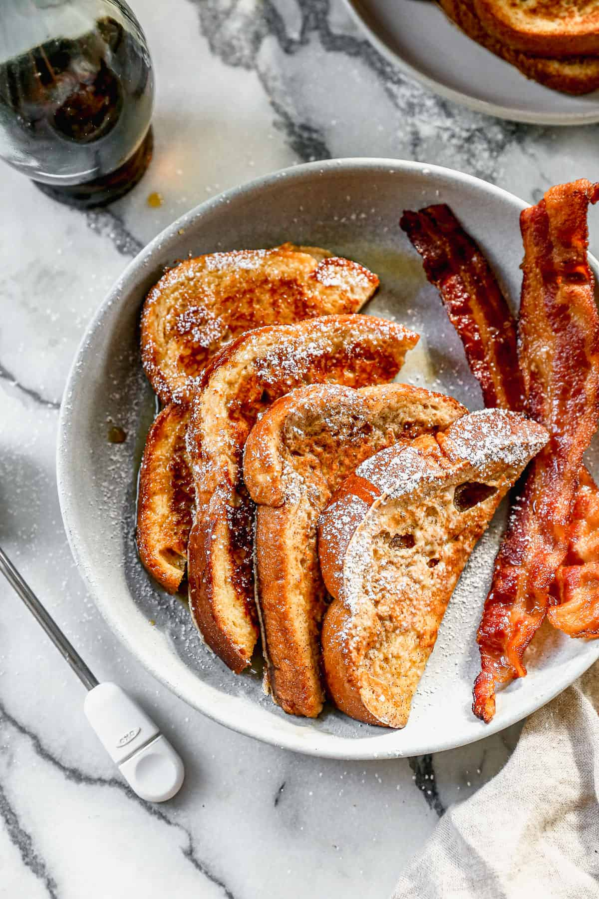

French Toast Recipe

Description
Description:This easy French Toast recipe is the BEST, with a thicker batter and cinnamon sugar flavors that really set it apart. It’s one of our family’s favorite breakfasts!
Ingredients
- 4 large eggs
- 2/3 cup milk
- 1/4 cup all-purpose flour
- ▢1/4 cup granulated sugar
- 1/4 teaspoon salt
- 1 teaspoon ground cinnamon
- 1 teaspoon vanilla extract
- 8 thick slices bread
Steps
- Prep seasoning. Combine all spices in a bowl. Set aside.
- 2. Form patties. Divide ground chuck into 6 equal portions and gently form into ½ inch thick patties that are wider than the burger buns (as they will shrink). Use your thumb to press an indentation into the center of each patty. Cover and set aside.
- 3. Grill. Just before cooking, sprinkle seasoning over the patties, then place on hot grill, indent-side up. Close grill lid and cook for 3-4 minutes, until the bottom of the burger is seared and juices are accumulating on top of the burger. Flip and cook an additional 3-4 minutes or until the beef reaches 160 degrees F. If adding cheese, place cheese slices on burgers during the last minute of cooking.
- 4. Serve. Remove patties to a plate and allow to rest for a few minutes before serving in a bun, with toppings.